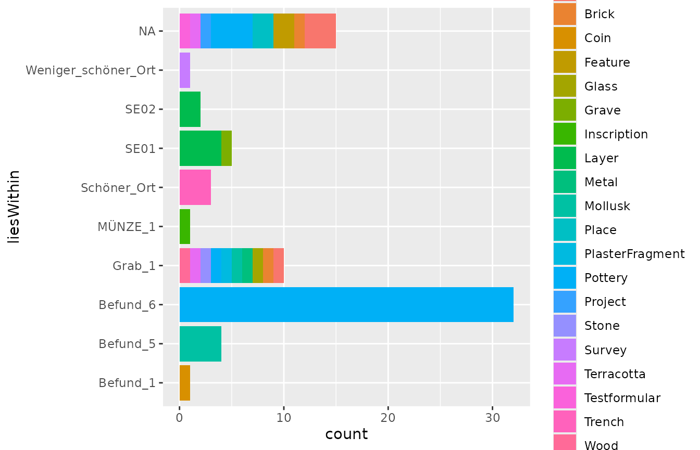

The idaifieldR-package is a tool for importing data from
the iDAI.field / Field
Desktop database into R. Its core functions establish a connection
to a running iDAI.field 2 or 3 (Field Desktop) client through its API
and retrieve the entire project database or a subset of it into a list
in R memory. This eliminates the need for exporting data to CSV files,
which can be time-consuming and limiting, and allows for the retrieval
of all documents at once. Scripts can be re-run and updated with new
data flexibly.
One of the key features of idaifieldR is its ability
to clean and format the imported data for easier processing in R. The
simplify_idaifield() function, for example, can replace
UUIDs with appropriate identifiers, reformat geometry for use with
R-packages like sp, and
select preferred language inputs for multi-language fields, among other
tasks. However, it’s important to keep in mind that processing large
databases can be slow and memory-intensive.
Installation
To use idaifieldR, you’ll need to install it from GitHub
since it is not yet available on CRAN. You can download the current
release from the idaifieldR-GitHub
page and install
from the file. Alternatively, you can use either the
devtools or remotes package to install it
directly from GitHub.
Here’s an example of installing and loading idaifieldR
using remotes:
require(remotes)
remotes::install_github("lsteinmann/idaifieldR")
library(idaifieldR)Loading the Database and Creating an Index
To follow along with this tutorial using the same data, you can load the backup file located at ‘inst/testdata/rtest.jsonl’ from the GitHub repository into a new project called ‘rtest’ in your Field Client. This demo dataset uses a slightly customized project configuration to demonstrate relevant functions.
To load the complete database and create an object to serve as an index for further processing, you need to create a connection object that contains all the information R needs to connect to the Field Desktop database server. This can be done using the following code:
conn <- connect_idaifield(serverip = "127.0.0.1",
pwd = "hallo",
project = "rtest")This code will ping the database and check if the connection is
working. If you are using Field Desktop on the same computer, you may
not need the serverip argument, as it defaults to the
common localhost address. Enter the password that is set in your Field
Desktop-Client under ‘Tools/Werkzeuge’ > ‘Settings/Einstellungen’:
‘Your password’/‘Eigenes Passwort’ as pwd.
project corresponds to the name of the project you want to
work with. For more information and additional arguments, please see the
documentation:
?connect_idaifieldTo load the complete ‘rtest’-dataset into R, we can use the
get_idaifield_docs() function and the connection object
conn that we created earlier:
idaifield_test_docs <- get_idaifield_docs(connection = conn)This function retrieves all the documents from the project specified
in the conn object and stores them in a list called
idaifield_test_docs. Note that retrieving all the documents
at once can take some time and use up a lot of memory, especially for
larger datasets.
After loading the dataset, you can take a look at its contents using
the View() function in RStudio or by exploring the
idaifield_test_docs object in the Environment window. The
idaifield_test_docs object is a named nested list with the
custom class idaifield_docs that contains one element for
each resource in the database, reflecting the original JSON-structure.
The name of each list is the identifier of the associated resource.
The doc$resource sub-list contains the actual entry for
each resource, while the other sub-lists contain information about the
changes made to each resource along with its basic data, such as the
UUID that Field Desktop uses internally as the unique
name of each resource. You can use this list to visualize changes made
to database entries on a time axis sorted by users, etc., but we will
continue to utilize idaifieldR’s functions to work with the
actual data.
The check_and_unnest() function from
idaifieldR can be used to reduce the
idaifield_test_docs list to the resource level. Although
this step is not necessary for further processing, it can make the data
easier to work with. You can use the following code to apply
check_and_unnest() to the idaifield_test_docs
list:
idaifield_test_resources <- check_and_unnest(idaifield_test_docs)For more information on check_and_unnest() and its
arguments, you can check out the documentation using
?check_and_unnest. The unnested list contains only the
actual data you entered in Field Desktop, and it takes up less memory
than the original nested list. You can browse this object using
View(idaifield_test_resources) in RStudio, or by accessing
its elements such as
idaifield_test_resources$Befund_6_KER_18 to see the
difference. This step is done automatically by idaifieldR functions
internally, so you don’t have to worry about it.
To give you a quick overview of our data, we can generate an index of
the database by querying it using the get_field_index()
function with the connection object conn and the argument
language = "en" to set the language of the returned index
to English. This index contains only the most basic information about
each object, such as its UUID, its identifier, and its
category:
index <- get_field_index(conn,
verbose = TRUE,
language = "en")
head(index)#> The list was already unnested to resource-level.| category | UID | identifier | isRecordedIn | liesWithin | shortDescription | liesWithinLayer |
|---|---|---|---|---|---|---|
| Layer | 02932bc4-22ce-3080-a205-e050b489c0c2 | Befund_6 | Schnitt 1 | SE02 | NA | bf06c7b0-dba0-dcfa-6d8e-3b3509fee5b6 |
| Survey | 031179fb-ac01-6b29-b6fc-b1b486d9bff8 | Surveyareal 1 | NA | Weniger_schöner_Ort | NA | NA |
| Bone | 0324141a-8201-c5dc-631b-4dded4552ac4 | KNOCHEN_1 | Schnitt 1 | Grab_1 | NA | ee5ceade-2595-de2e-bf83-a7b25d6c47a6 |
| Pottery | 0569d787-aa67-e105-3a27-cba29012e78e | Befund_6_KER_4 | Schnitt 1 | Befund_6 | NA | 02932bc4-22ce-3080-a205-e050b489c0c2 |
| Pottery | 0860b5a5-4602-9feb-fabb-85610298bd93 | Befund_6_KER_18 | Schnitt 1 | Befund_6 | NA | 02932bc4-22ce-3080-a205-e050b489c0c2 |
| Mollusk | 0cc6771c-5532-467f-90af-eb3bbd326437 | MOLLUSK_cm_meas_dimTest | Schnitt 1 | Befund_5 | DO NOT CHANGE | 0ea7c837-7c35-b53a-cd03-bbfaca247b08 |
When using the get_field_index() function with
verbose = TRUE, it includes the field
shortDescription of each object from the database. By
default, tries to get the English values from multi-language fields, but
you can specify the preferred language. For example, setting
language = "de" will display the German language
description. If the selected language does not exist, the function will
substitute another language.
To visualize the data from the index, we can use ggplot2
and the pipe-operator from dplyr. This will give us a
general idea of the data we are working with.

As you can see, the demo data encompasses a variety of finds, that
are recorded in different “Layers” and “Trenches”. To get to the data
and produce some more useful plots, we will now simplify our
idaifield_test_resources-list.
Simplify the List
The function simplify_idaifield() takes several
arguments that control the output. You can learn more about them in the
documentation (?simplify_idaifield). In most cases, it
should suffice to use the defaults and only pass the imported
idaifield_docs or idaifield_resources
list.
idaifield_test_simple <- simplify_idaifield(idaifield_test_resources,
keep_geometry = FALSE,
replace_uids = TRUE,
uidlist = index,
language = "en",
spread_fields = TRUE)
#> The list was already unnested to resource-level.The simplify_idaifield() function provides a convenient
way to simplify the format of an idaifield_docs or
idaifield_resources list. By default, it tries to use the
English values from multi-language input fields, and if not available,
it uses the next available language in alphabetical order. You can, of
course, select the language of your data as well. If you want to keep
all languages from the multi-language input fields, you can set
language = "all".
In addition, keep_geometry = FALSE removes all
coordinate information from the resources. This may be useful if you
don’t need the geographical data or want to save memory. By default,
replace_uids is set to TRUE, which replaces
UUIDs in the data with their corresponding identifiers
to make them more readable.
Checkbox fields and the campaign field are automatically spread
across multiple entries to later store them in multiple columns in a
matrix. This behaviour can be changed by setting
spread_fields = FALSE.
If you process the entire database with
simplify_idaifield(), you don’t need to supply an index.
The function will generate its own index. However, if you only process a
subset of the data, you will need to supply an index of the complete
database.
In summary, simplify_idaifield() provides several
options to control the output of the data extraction. For more
information on the available options, you can consult the documentation
using the ?simplify_idaifield command.
The list now has the idaifield_simple class. Browse the
resulting list by clicking on it in your Environment-window in RStudio
or use View(idaifield_test_simple). All
idaifield_...-objects carry the connection and name of the
project as attributes with them for later use. You can view them with
attributes(idaifield_test_simple).
If you want to analyze your data in a customized way, it’s
recommended that you work directly with the
idaifield_resources-list and extract the information you
need. However, if you prefer to have a matrix format,
idaifieldR provides a function that can convert the list
into a matrix. Before doing so, it’s useful to select only the resources
that are relevant to your analysis. For example, if you are only
interested in pottery, you can use the idf_select_by()
function from idaifieldR to filter the list accordingly. The
documentation for this function can be found at
?idf_select_by:
pottery <- idf_select_by(idaifield_test_simple, by = "category", value = "Pottery")
#> The list was already unnested to resource-level and simplified.Queries
The same outcome can be achieved by querying the database directly.
See the documentation of ?idf_index_query,
?idf_query and ?idf_json_query. This may be
useful when you frequently want to update your data, but have a large
amount of resources in the database of which you only need a small
subset:
pottery_docs <- idf_query(conn,
field = "category",
value = "Pottery")The query-functions will return idaifield_docs-lists
that (if you so wish) you still need to simplify. You need to
supply the index to the uidlist-argument, otherwise UUIDs
of relations cannot be replaced:
pottery_simple <- simplify_idaifield(pottery_docs, uidlist = index, language = "en")Transform the Lists to a Matrix / data.frame
In both cases, you should now have an idaifield_simple
object with 37 elements. This, we will turn into a matrix, or directly
into a data.frame to make plots easier:
pottery <- idaifield_as_matrix(pottery) %>%
as.data.frame()
#> The list was already unnested to resource-level.When viewing the resulting Pottery-data frame, you will
notice that the campaign-field has been converted to multiple columns.
If a custom configuration is present and can be accessed by
get_configuration(), this will happen to all custom
checkbox-fields, as there is no other way to conveniently deal with such
fields in a data frame. You can prevent this by setting
spread_field = FALSE in simplify_idaifield().
To make different or better use of it, try to format the original list
itself according to your needs.
From the data frame, we can produce some basic plots and take a look at the distribution of periods across our layers:

And another example:

Languages
There are currently two functions that will make it easier to replace the internal names of variables with their translations in different languages:
core_lang_list <- download_language_list(project = "core", language = "en")
milet_lang_list <- download_language_list(project = "Milet", language = "en")Since these functions download the Language configuration from github.com/dainst/idai-field, I would advise you to safe the result in a local RDS-file after you prepared everything. You can prepare a lookup-table like this:
lookup <- get_language_lookup(core_lang_list, language = "en")
lookup <- rbind(lookup, get_language_lookup(milet_lang_list, language = "en"))To get the translations from the Project configuration, you can get
it using get_configuration(). Please note that you need to
be able to connect to the database in order to do that. This will also
give you an impression of how the lookup-table is set up:
config <- get_configuration(conn)
lookup_conf <- get_language_lookup(config$languages, language = "en")
head(lookup_conf)| var | label |
|---|---|
| Testformular | Test Form |
| testCustomField | englisch testCustomField |
You can use this to manually replace values for plots. The translations from valuelists can currently not be imported, so this only applies to the names of fields.
TLDR
To make a long story short and sum it up, there are two ways that you can get all your Pottery-resources into R. The following few lines are always necessary:
conn <- connect_idaifield(pwd = "hallo", project = "idaifieldr-demo")
db <- get_idaifield_docs(connection = conn)
index <- get_field_index(conn)Using the following few lines and all default arguments while selecting from the whole database:
pottery <- db %>%
idf_select_by(by = "category", value = "Pottery") %>%
# Note: simplify_idaifield() needs the index of the complete project database
# as a lookup-table to replace all UUIDs with their identifiers
simplify_idaifield(uidlist = index) %>%
idaifield_as_matrix() %>%
as.data.frame()Or using the following few lines with direct queries to the database,
see also ?idf_index_query and
?idf_json_query:
pottery <- idf_query(connection = conn,
project = "idaifieldr-demo",
field = "category",
value = "Pottery") %>%
idaifield_as_matrix() %>%
as.data.frame()